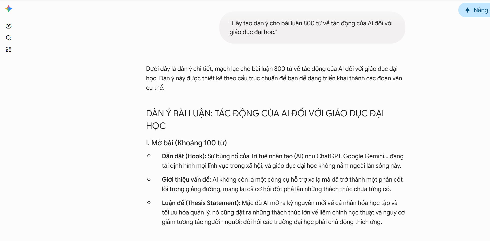
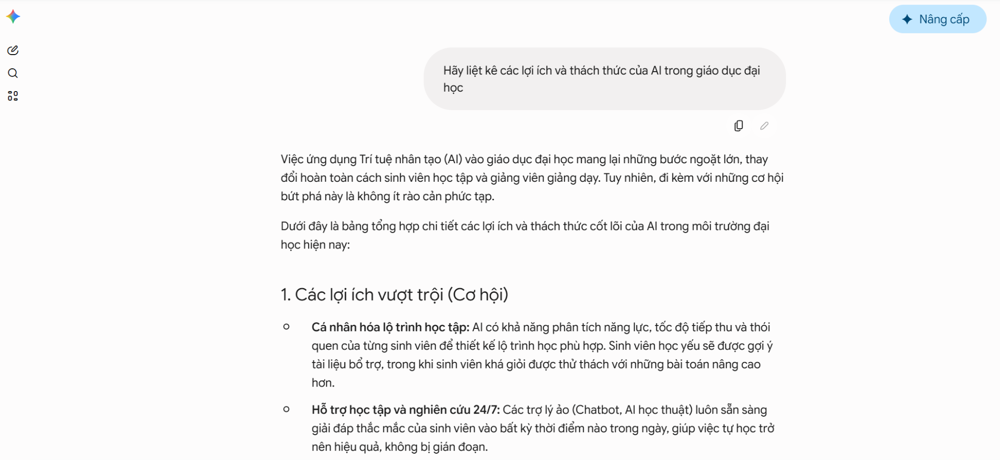
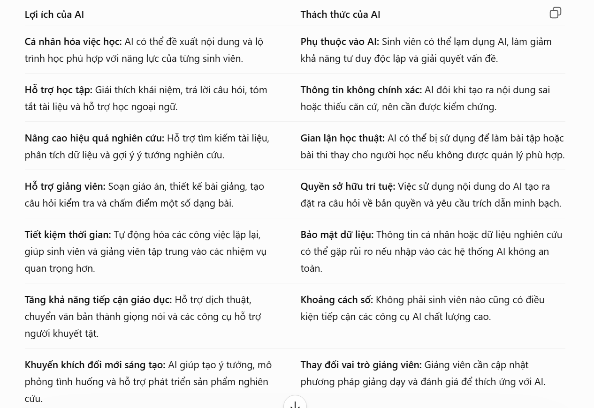
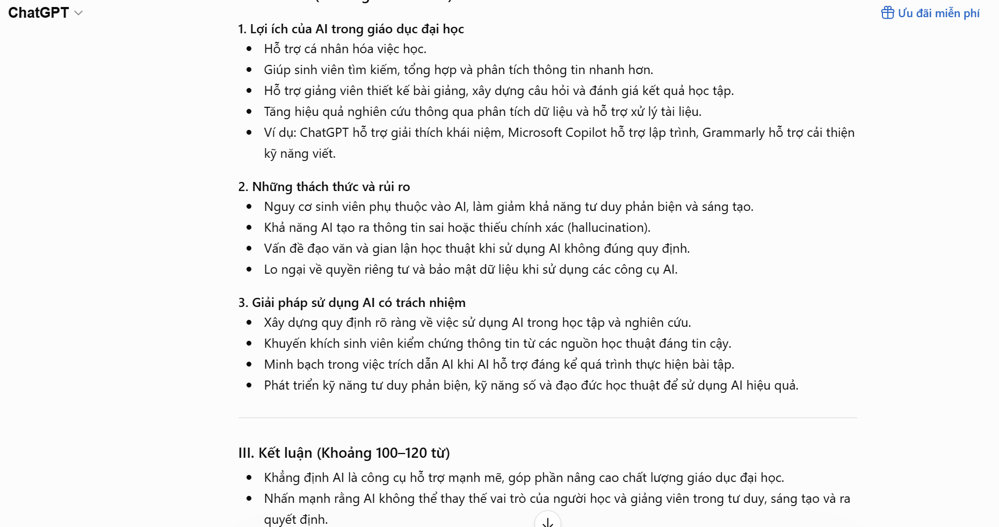
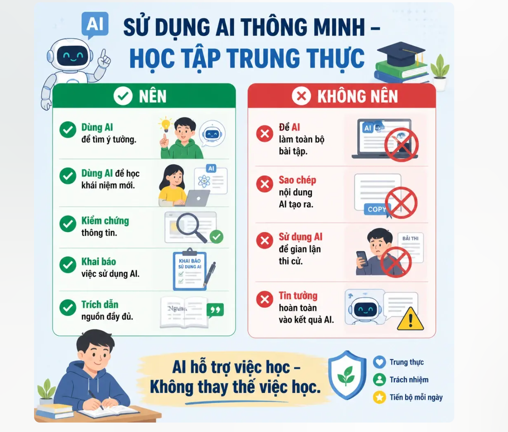

<!DOCTYPE html>

<html lang="vi"><head><meta charset="utf-8"/><meta content="width=device-width,initial-scale=1" name="viewport"/><meta content="Phân tích chính sách, đạo đức học thuật, bộ nguyên tắc cá nhân và infographic minh họa." name="description"/><title>Bài 6 · Sử dụng AI có trách nhiệm trong học tập và nghiên cứu</title><link href="favicon.svg" rel="icon" type="image/svg+xml"/><link href="assets/css/styles.css" rel="stylesheet"/></head><body><div class="site-shell"><header class="site-header"><div class="nav-wrap"><a aria-label="Về trang chủ Vân Khánh" class="brand" href="index.html"><span aria-hidden="true" class="brand-mark"><svg fill="none" viewbox="0 0 48 48"><path d="M8 31c8-1 14-5 19-14 4 9 8 13 13 15" stroke="currentColor" stroke-linecap="round" stroke-width="1.8"></path><path d="M11 36c6-3 12-3 18 0s10 3 14 0" stroke="currentColor" stroke-linecap="round" stroke-width="1.8"></path><path d="M21 19c-5-5-9-6-12-4 1 6 5 9 11 9" stroke="currentColor" stroke-linecap="round" stroke-width="1.8"></path><circle cx="35" cy="12" fill="currentColor" opacity=".35" r="3"></circle></svg></span><span class="brand-copy"><strong>Vân Khánh</strong><small>Portfolio CNS &amp; AI · 2026</small></span></a><button aria-expanded="false" aria-label="Mở menu" class="menu-btn" type="button"><span>Menu</span><i aria-hidden="true" class="menu-lines"></i></button><nav aria-label="Điều hướng chính" class="nav-links"><a href="index.html">Giới thiệu</a><a href="index.html#bai-tap">Bài tập</a><a href="index.html#thong-tin">Thông tin</a><a href="index.html#lien-he">Liên hệ</a></nav></div></header><div aria-hidden="true" class="paper-noise"></div><a class="skip-link" href="#main">Bỏ qua điều hướng</a><main id="main"><section class="article-hero"><div class="container"><div class="crumb">Bài tập 06 · Nhập môn CNS &amp; AI</div><h1>Sử dụng AI có trách nhiệm trong học tập và nghiên cứu</h1><p class="article-summary">Phân tích chính sách, đạo đức học thuật, bộ nguyên tắc cá nhân và infographic minh họa.</p></div></section><div class="article-layout"><aside class="toc"><strong>Mục lục</strong><ol><li><a href="#muc-1">3. So sánh với Đại học FPT</a></li></ol></aside><article class="document"><p>
BÁO
CÁO SỬ DỤNG AI CÓ TRÁCH NHIỆM TRONG HỌC TẬP VÀ NGHIÊN
CỨU</p>
<p>Họ
và tên: Vũ Đan Ngọc Vân Khánh</p>
<p>MSSV:
25041670 
</p>
<p>Lớp:
25C6</p>
<p>Ngày
thực hiện: 27/6/2026</p>
<p>I.
NGHIÊN CỨU CHÍNH SÁCH SỬ DỤNG AI TRONG HỌC TẬP VÀ
NGHIÊN CỨU</p>
<p>1.
Tổng quan</p>
<p>Trong
bối cảnh AI phát triển mạnh, các trường đại học
khuyến khích sinh viên khai thác AI nhằm nâng cao hiệu quả
học tập nhưng phải tuân thủ nguyên tắc <b>liêm
chính học thuật</b>.
Đối với VNU, định hướng chung là xem AI là công cụ hỗ
trợ, không phải công cụ thay thế quá trình tư duy và
nghiên cứu của người học.</p>
<p>
Các
nguyên tắc quan trọng gồm:</p>
<ul>
<li><p>
AI
	chỉ hỗ trợ quá trình học tập.</p></li>
<li><p>Sinh
	viên phải chịu trách nhiệm về nội dung nộp.</p></li>
<li><p>Không
	sử dụng AI để gian lận trong kiểm tra, thi cử hoặc
	đạo văn.</p></li>
<li><p>Cần
	kiểm chứng lại thông tin do AI cung cấp.</p></li>
<li><p>Khuyến
	khích minh bạch khi AI được sử dụng trong quá trình
	thực hiện bài tập.</p></li>
</ul>
<p>
Theo
hướng dẫn sử dụng AI tạo sinh của VNU, sinh viên được
phép sử dụng AI để:</p>
<ul>
<li><p>Lên
	ý tưởng nghiên cứu.</p></li>
</ul>
<ul>
<li><p>Tạo
	dàn ý bài viết.</p></li>
<li><p>Tóm
	tắt tài liệu.</p></li>
<li><p>Hỗ
	trợ giải thích khái niệm.</p></li>
</ul>
<p>Tuy
nhiên sinh viên không được:</p>
<ul>
<li><p>Để
	AI viết toàn bộ bài nộp.</p></li>
<li><p>Sao
	chép nguyên văn nội dung AI tạo ra.</p></li>
<li><p>Sử
	dụng AI trong các bài kiểm tra không được cho phép.</p></li>
</ul>
<p>2.
Phân tích</p>
<ul>
<li><p>Nhận
	xét cá nhân</p></li>
</ul>
<p>Qua
nghiên cứu, tôi nhận thấy điểm chung của các chính
sách là:</p>
<ul>
<li><p>AI
	được xem là công cụ hỗ trợ.</p></li>
<li><p>Con
	người phải chịu trách nhiệm cuối cùng.</p></li>
<li><p>Việc
	sử dụng AI cần minh bạch.</p></li>
<li><p>Không
	được để AI thay thế tư duy cá nhân.</p></li>
</ul>
<p>
→ Những
quy định trên giúp cân bằng giữa việc tận dụng công
nghệ và bảo đảm chất lượng đào tạo.</p>
<p>
Ưu
điểm:</p>
<ul>
<li><p>
Khuyến
	khích đổi mới sáng tạo.</p></li>
<li><p>Nâng
	cao hiệu quả học tập.</p></li>
<li><p>Giúp
	sinh viên tiếp cận công nghệ mới.</p></li>
</ul>
<p>
Hạn
chế:</p>
<ul>
<li><p>
AI
	đôi khi tạo thông tin sai (hallucination).</p></li>
<li><p>Khó
	xác định mức độ AI tham gia trong bài làm.</p></li>
<li><p>Cần
	có hướng dẫn thống nhất giữa các giảng viên.</p></li>
</ul>
<h2 id="muc-1">
3.
So sánh với Đại học FPT</h2>
<ul>
<li><p>
So
	với VNU, Đại học FPT có xu hướng khuyến khích sinh
	viên sử dụng AI nhiều hơn trong học tập và lập trình,
	nhưng vẫn yêu cầu minh bạch nguồn gốc nội dung và
	không sử dụng AI để gian lận. Theo tôi, hướng tiếp
	cận của VNU phù hợp vì vừa khuyến khích ứng dụng AI
	vừa đề cao trách nhiệm của người học.</p></li>
</ul>
<p>II.
THỰC HIỆN MỘT NHIỆM VỤ HỌC TẬP VỚI AI</p>
<p>Nhiệm
vụ được chọn: Viết bài luận ngắn về chủ đề "Tác
động của trí tuệ nhân tạo đối với giáo dục đại
học."</p>
<p>1.
Prompt đã sử dụng</p>
<p>Prompt
1: "Hãy tạo dàn ý cho bài luận 800 từ về tác động
của AI đối với giáo dục đại học."</p>
<p><figure><figcaption>Kết quả AI hỗ trợ xây dựng dàn ý</figcaption></figure>
</p>
<p>Prompt
2: "Hãy liệt kê các lợi ích và thách thức của AI
trong giáo dục đại học."</p>
<p><figure><figcaption>Kết quả AI phân tích lợi ích và thách thức</figcaption></figure>
</p>
<p>Prompt
3:"Hãy gợi ý các nguồn học thuật liên quan đến AI
trong giáo dục."</p>
<p>2.
Đầu ra của AI</p>
<p>AI
đề xuất:</p>
<p>Lợi
ích:</p>
<ul>
<li><p>Cá
	nhân hóa việc học.</p></li>
<li><p>Hỗ
	trợ giảng viên.</p></li>
</ul>
<ul>
<li><p>Tăng
	khả năng tiếp cận tri thức.</p></li>
</ul>
<p>Thách
thức:</p>
<ul>
<li><p>Nguy
	cơ gian lận học thuật.</p></li>
<li><p>Thông
	tin sai lệch.</p></li>
<li><p>Phụ
	thuộc quá mức vào công nghệ.</p></li>
</ul>
<p>3.
Cách đánh giá và chỉnh sửa</p>
<p>Tôi
không sử dụng trực tiếp toàn bộ nội dung AI tạo ra mà
thực hiện các bước:</p>
<p>Bước
1: Kiểm tra tính chính xác của thông tin bằng các nguồn
học thuật.</p>
<p>Bước
2: Loại bỏ các ý lặp lại hoặc quá chung chung.</p>
<p>Bước
3: Bổ sung quan điểm cá nhân và ví dụ thực tế.</p>
<p>Bước
4: Viết lại nội dung bằng ngôn ngữ của bản thân.</p>
<p>→Kết
quả: AI giúp tiết kiệm thời gian tìm ý tưởng nhưng
phần nội dung cuối cùng vẫn do tôi chỉnh sửa và hoàn
thiện.</p>
<p><figure><figcaption>Đầu ra AI cho nhiệm vụ học tập</figcaption></figure>
<figure><figcaption>Minh chứng quá trình chỉnh sửa nội dung AI</figcaption></figure>
</p>
<p>4.
Trích dẫn việc sử dụng AI</p>
<p>Ví
dụ phần khai báo trong bài luận: "ChatGPT (OpenAI, 2026)
được sử dụng để hỗ trợ  xây dựng dàn ý và gợi
ý ý tưởng ban đầu. Tất cả nội dung cuối cùng đã
được tác giả kiểm tra, chỉnh sửa và chịu trách
nhiệm."</p>
<p>III.
PHÂN TÍCH CÁC VẤN ĐỀ ĐẠO ĐỨC</p>
<p>1.
Ranh giới giữa hỗ trợ hợp lý và gian lận học thuật</p>
<p>AI
có thể hỗ trợ:</p>
<ul>
<li><p>Tìm
	ý tưởng.</p></li>
<li><p>Tạo
	dàn ý.</p></li>
<li><p>Giải
	thích khái niệm.</p></li>
<li><p>Kiểm
	tra ngữ pháp.</p></li>
</ul>
<p>Tuy
nhiên việc để AI viết toàn bộ bài nộp và nộp như
sản phẩm cá nhân là gian lận học thuật. Ranh giới quan
trọng nhất là mức độ đóng góp của người học trong
sản phẩm cuối cùng.</p>
<p>2.
Quyền sở hữu trí tuệ và trích dẫn</p>
<p>Một
vấn đề lớn là nhiều sinh viên sao chép nội dung do AI
tạo ra mà không khai báo.</p>
<p>Ngoài
ra AI đôi khi tạo ra:</p>
<ul>
<li><p>Trích
	dẫn giả.</p></li>
<li><p>Tài
	liệu tham khảo không tồn tại.</p></li>
<li><p>Thông
	tin không chính xác.</p></li>
</ul>
<p>Do
đó người dùng cần kiểm tra nguồn trước khi sử dụng.</p>
<p>3.
Tác động đến quá trình học tập và phát triển kỹ
năng</p>
<p>Tác
động tích cực:</p>
<ul>
<li><p>Tiết
	kiệm thời gian.</p></li>
<li><p>Hỗ
	trợ học tập cá nhân hóa.</p></li>
<li><p>Tăng
	khả năng tiếp cận kiến thức.</p></li>
<li><p>Tác
	động tiêu cực</p></li>
<li><p>Giảm
	khả năng tư duy độc lập.</p></li>
<li><p>Làm
	suy giảm kỹ năng viết học thuật.</p></li>
<li><p>Tạo
	thói quen phụ thuộc vào AI.</p></li>
</ul>
<p>Nếu
sử dụng không hợp lý, sinh viên có thể đạt kết quả
tốt hơn trong ngắn hạn nhưng giảm năng lực thực sự
trong dài hạn.</p>
<p>IV.
BỘ NGUYÊN TẮC CÁ NHÂN VỀ SỬ DỤNG AI CÓ TRÁCH NHIỆM</p>
<p>Sau
khi nghiên cứu các chính sách và vấn đề đạo đức,
tôi xây dựng bộ nguyên tắc cá nhân như sau:</p>
<p>Nguyên
tắc 1: AI chỉ là công cụ hỗ trợ, không thay thế tư
duy cá nhân.</p>
<p>Nguyên
tắc 2: Luôn kiểm chứng thông tin trước khi sử dụng.</p>
<p>Nguyên
tắc 3: Không sao chép nguyên văn nội dung do AI tạo ra.</p>
<p>Nguyên
tắc 4: Minh bạch trong việc khai báo sử dụng AI.</p>
<p>Nguyên
tắc 5: Tôn trọng quyền sở hữu trí tuệ và trích dẫn
nguồn đầy đủ.</p>
<p>Nguyên
tắc 6: Không sử dụng AI để gian lận trong kiểm tra hoặc
đánh giá.</p>
<p>Nguyên
tắc 7: Sử dụng AI để học hỏi và phát triển kỹ năng
thay vì phụ thuộc hoàn toàn.</p>
<p>V.
INFOGRAPHIC: SỬ DỤNG AI CÓ TRÁCH NHIỆM TRONG HỌC THUẬT</p>
<p>Tiêu
đề</p>
<p>"SỬ
DỤNG AI THÔNG MINH – HỌC TẬP TRUNG THỰC"</p>
<p>Nội
dung chính:</p>
<p>NÊN</p>
<ul>
<li><p>Dùng
	AI để tìm ý tưởng.</p></li>
<li><p>Dùng
	AI để học khái niệm mới.</p></li>
<li><p>Kiểm
	chứng thông tin.</p></li>
<li><p>Khai
	báo việc sử dụng AI.</p></li>
<li><p>Trích
	dẫn nguồn đầy đủ.</p></li>
</ul>
<p>KHÔNG
NÊN</p>
<ul>
<li><p>Để
	AI làm toàn bộ bài tập.</p></li>
<li><p>Sao
	chép nội dung AI tạo ra.</p></li>
<li><p>Sử
	dụng AI để gian lận thi cử.</p></li>
<li><p>Tin
	tưởng hoàn toàn vào kết quả AI.</p></li>
</ul>
<p>Thông
điệp: "AI hỗ trợ việc học – Không thay thế việc
học." 
</p>
<p><figure><figcaption>Infographic sử dụng AI có trách nhiệm</figcaption></figure>
</p>
<h2 id="muc-2">
<b>Tài
liệu tham khảo</b></h2>
<ul>
<li><p>
OpenAI.
	(2026). <i>ChatGPT
	(GPT-5.5).</i><a href="https://chatgpt.com/">
</a><a href="https://chatgpt.com/"><u>https://chatgpt.com</u></a></p></li>
<li><p>UNESCO.
	(2023). <i>Guidance
	for Generative AI in Education and Research.</i></p></li>
<li><p>Bộ
	Giáo dục và Đào tạo Việt Nam. Các văn bản và hướng
	dẫn về chuyển đổi số trong giáo dục</p></li>
</ul>
<nav aria-label="Điều hướng bài tập" class="page-nav"><a href="bai-5.html"><small>Bài trước</small>← Bài 5</a><a href="bai-1.html" style="text-align:right"><small>Bài tiếp theo</small>Bài 1 →</a></nav></article></div></main><footer class="site-footer" id="lien-he"><div class="container"><div class="footer-grid"><div><h2>Ngôn ngữ mở lối.<br/>Công nghệ nối dài hành trình.</h2><p>Portfolio môn Nhập môn Công nghệ số và Trí tuệ nhân tạo, được trình bày theo sáu bài tập độc lập.</p></div><div class="footer-links"><a href="tel:0833292007">0833 292 007</a><a href="index.html#bai-tap">Xem sáu bài tập</a><a href="index.html">Về trang chủ</a></div></div><div class="footer-bottom"><span>Vũ Đan Ngọc Vân Khánh · 25041670</span><span>Đại học Ngoại ngữ · ĐHQGHN</span></div></div></footer></div><script src="assets/js/main.js"></script></body></html>